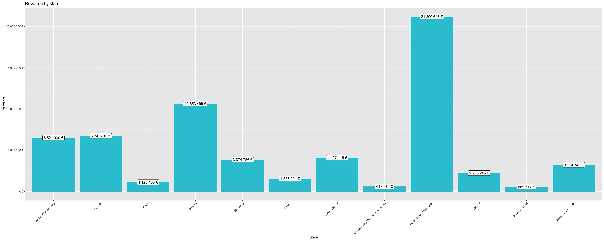
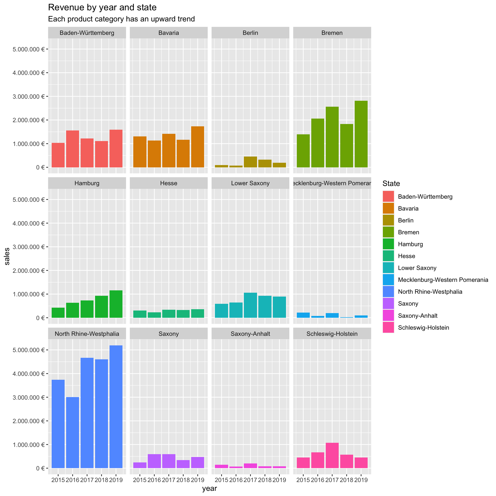

As I am not quite sure how we are supposed to structure the journal, i will focus on the bigger Exercises and the challanges. The smaller Exercises can be seen below.
Last compiled: 2020-12-06
# Data Science at TUHH ------------------------------------------------------
# SALES ANALYSIS ----
# 1.0 Load libraries ----
library(tidyverse)
library(readxl)
# 2.0 Importing Files ----
bikes_tbl <- read_excel(path = "00_data/01_bike_sales/01_raw_data/bikes.xlsx")
orderlines_tbl <- read_excel("00_data/01_bike_sales/01_raw_data/orderlines.xlsx")
bikeshops_tbl <- read_excel("00_data/01_bike_sales/01_raw_data/bikeshops.xlsx")
# 4.0 Joining Data ----
bike_orderlines_joined_tbl <- orderlines_tbl %>%
left_join(bikes_tbl, by = c("product.id" = "bike.id")) %>%
left_join(bikeshops_tbl, by = c("customer.id" = "bikeshop.id"))
bike_orderlines_joined_tbl %>% glimpse()## Rows: 15,644
## Columns: 19
## $ ...1 <chr> "1", "2", "3", "4", "5", "6", "7", "8", "9", "10", "11…
## $ order.id <dbl> 1, 1, 2, 2, 3, 3, 3, 3, 3, 4, 5, 5, 5, 5, 6, 6, 6, 6, …
## $ order.line <dbl> 1, 2, 1, 2, 1, 2, 3, 4, 5, 1, 1, 2, 3, 4, 1, 2, 3, 4, …
## $ order.date <dttm> 2015-01-07, 2015-01-07, 2015-01-10, 2015-01-10, 2015-…
## $ customer.id <dbl> 2, 2, 10, 10, 6, 6, 6, 6, 6, 22, 8, 8, 8, 8, 16, 16, 1…
## $ product.id <dbl> 2681, 2411, 2629, 2137, 2367, 1973, 2422, 2655, 2247, …
## $ quantity <dbl> 1, 1, 1, 1, 1, 1, 1, 1, 1, 1, 1, 2, 1, 1, 1, 1, 1, 1, …
## $ model <chr> "Spectral CF 7 WMN", "Ultimate CF SLX Disc 8.0 ETAP", …
## $ model.year <dbl> 2021, 2020, 2021, 2019, 2020, 2020, 2020, 2021, 2020, …
## $ frame.material <chr> "carbon", "carbon", "carbon", "carbon", "aluminium", "…
## $ weight <dbl> 13.80, 7.44, 14.06, 8.80, 11.50, 8.80, 8.20, 8.85, 14.…
## $ price <dbl> 3119, 5359, 2729, 1749, 1219, 1359, 2529, 1559, 3899, …
## $ category <chr> "Mountain - Trail - Spectral", "Road - Race - Ultimate…
## $ gender <chr> "female", "unisex", "unisex", "unisex", "unisex", "uni…
## $ url <chr> "https://www.canyon.com/en-de/mountain-bikes/trail-bik…
## $ name <chr> "AlexandeRad", "AlexandeRad", "WITT-RAD", "WITT-RAD", …
## $ location <chr> "Hamburg, Hamburg", "Hamburg, Hamburg", "Bremen, Breme…
## $ lat <dbl> 53.57532, 53.57532, 53.07379, 53.07379, 48.78234, 48.7…
## $ lng <dbl> 10.015340, 10.015340, 8.826754, 8.826754, 9.180819, 9.…# 5.0 Wrangling Data ----
bike_orderlines_wrangled_tbl <- bike_orderlines_joined_tbl %>%
separate(col = location,
into = c("city", "state"),
sep = ", ") %>%
mutate(total.price = price * quantity) %>%
select(-...1, -gender) %>%
select(order.id, contains("order"), contains("state"), contains("city"),
price, quantity, total.price,
everything()) %>%
rename(bikeshop = name) %>%
set_names(names(.) %>% str_replace_all("\\.", "_"))
# 6.0 Business Insights ----
# 6.1 Sales by Year ----
library(lubridate)
# Step 1 - Manipulate
sales_by_loc_tbl <- bike_orderlines_wrangled_tbl %>%
# Select columns
select(state, total_price) %>%
# Grouping by year and summarizing sales
group_by(state) %>%
summarize(sales = sum(total_price)) %>%
# Optional: Add a column that turns the numbers into a currency format
# (makes it in the plot optically more appealing)
# mutate(sales_text = scales::dollar(sales)) <- Works for dollar values
mutate(sales_text = scales::dollar(sales, big.mark = ".",
decimal.mark = ",",
prefix = "",
suffix = " €"))
sales_by_loc_tbl## # A tibble: 12 x 3
## state sales sales_text
## <chr> <dbl> <chr>
## 1 Baden-Württemberg 6521090 6.521.090 €
## 2 Bavaria 6742819 6.742.819 €
## 3 Berlin 1128433 1.128.433 €
## 4 Bremen 10653499 10.653.499 €
## 5 Hamburg 3874756 3.874.756 €
## 6 Hesse 1558901 1.558.901 €
## 7 Lower Saxony 4107115 4.107.115 €
## 8 Mecklenburg-Western Pomerania 618974 618.974 €
## 9 North Rhine-Westphalia 21200613 21.200.613 €
## 10 Saxony 2230245 2.230.245 €
## 11 Saxony-Anhalt 569614 569.614 €
## 12 Schleswig-Holstein 3224749 3.224.749 €# 6.1 Sales by Year ----# Step 2 - Visualize
sales_by_loc_tbl %>%
# Setup canvas with the columns year (x-axis) and sales (y-axis)
ggplot(aes(x = state, y = sales)) +
theme(axis.text.x = element_text(angle = 45, hjust = 1))+
# Geometries
geom_col(fill = "#2DC6D6") + # Use geom_col for a bar plot
geom_label(aes(label = sales_text)) + # Adding labels to the bars
# geom_smooth(method = "lm", se = FALSE) + # Adding a trendline
# Formatting
# scale_y_continuous(labels = scales::dollar) + # Change the y-axis.
# Again, we have to adjust it for euro values
scale_y_continuous(labels = scales::dollar_format(big.mark = ".",
decimal.mark = ",",
prefix = "",
suffix = " €")) +
labs(
title = "Revenue by state",
x = "State", # Override defaults for x and y
y = "Revenue"
)
# 6.2 Sales by Year and Category 2 ----
# Step 1 - Manipulate
sales_by_year_loc_tbl <- bike_orderlines_wrangled_tbl %>%
# Select columns and add a year
select(order_date, total_price, state) %>%
mutate(year = year(order_date)) %>%
# Group by and summarize year and main catgegory
group_by(year, state) %>%
summarise(sales = sum(total_price)) %>%
ungroup() %>%
# Format $ Text
mutate(sales_text = scales::dollar(sales, big.mark = ".",
decimal.mark = ",",
prefix = "",
suffix = " €"))
sales_by_year_loc_tbl ## # A tibble: 60 x 4
## year state sales sales_text
## <dbl> <chr> <dbl> <chr>
## 1 2015 Baden-Württemberg 1031924 1.031.924 €
## 2 2015 Bavaria 1301461 1.301.461 €
## 3 2015 Berlin 95853 95.853 €
## 4 2015 Bremen 1395912 1.395.912 €
## 5 2015 Hamburg 423090 423.090 €
## 6 2015 Hesse 308609 308.609 €
## 7 2015 Lower Saxony 584386 584.386 €
## 8 2015 Mecklenburg-Western Pomerania 222003 222.003 €
## 9 2015 North Rhine-Westphalia 3735092 3.735.092 €
## 10 2015 Saxony 238371 238.371 €
## # … with 50 more rows# Step 2 - Visualize
sales_by_year_loc_tbl %>%
# Set up x, y, fill
ggplot(aes(x = year, y = sales, fill = state)) +
# Geometries
geom_col() + # Run up to here to get a stacked bar plot
# Facet
facet_wrap(~ state) +
# Formatting
scale_y_continuous(labels = scales::dollar_format(big.mark = ".",
decimal.mark = ",",
prefix = "",
suffix = " €")) +
labs(
title = "Revenue by year and state",
subtitle = "Each product category has an upward trend",
fill = "State" # Changes the legend name
) Save again and overwrite, not sure how we are supposed to handle that but to be on the save side:
# 7.0 Writing Files ----
# 7.1 Excel ----
#install.packages("writexl")
library("writexl")
bike_orderlines_wrangled_tbl %>%
write_xlsx("00_data/01_bike_sales/02_wrangled_data/bike_orderlines.xlsx")
# 7.2 CSV ----
bike_orderlines_wrangled_tbl %>%
write_csv("00_data/01_bike_sales/02_wrangled_data/bike_orderlines.csv")
# 7.3 RDS ----
bike_orderlines_wrangled_tbl %>%
write_rds("00_data/01_bike_sales/02_wrangled_data/bike_orderlines.rds")Here I will get some weather Data:
library(tidyverse)
library(httr)
library(glue)
api_key <- "00983b00961d78e6db02be765c604c7b"
base_url <- "https://api.openweathermap.org/data/2.5/weather"
city_list <- c("Hamburg","Bonn","Berlin")
weather_tbl <- tibble(City = character() ,Temperature = numeric())
for (city in city_list) {
weather_path <- "?q={city}&appid={api_key}"
api_url <- glue(base_url, weather_path)
weather <- GET(url = api_url)
weather_data <- weather %>% content(as = 'parsed')
temperature <- weather_data$main$temp - 273.16
weather_tbl <- weather_tbl %>% add_row(City = city, Temperature = temperature)
weather_tbl
}Here I will get the name and Price of all Rose Bikes
library(tidyverse)
library(rvest)
library(glue)
library(stringr)
library(purrr)
base_url <- "https://www.rosebikes.de"
bike_path <- "fahrräder"
bike_url <- glue(base_url, "/",bike_path)
bike_html <- bike_url %>% read_html()
category_path <- bike_html %>% html_nodes(css = ".catalog-navigation__list-item > a") %>% html_attr("href") %>% discard(.p = ~stringr::str_detect(.x,"zoovu|sale" )) %>% enframe(value = "Path")
categorys <- category_path %>% mutate(category = category_path$Path %>% map( str_extract,"(?<=./).+"))
i = 1
for (category in categorys$category) {
categorys$category[[i]] <- glue(bike_url,"/", category)
i <- i+1
}
category_html <- categorys$category %>% map(read_html)
bike_name <- category_html %>% map(html_nodes, css = c(".catalog-category-bikes__title-text") ) %>% map(html_text) %>% enframe(value = "Name")
bike_price <- category_html %>% map(html_nodes, css = c(".catalog-category-bikes__price-title") ) %>% map(html_text) %>% enframe(value = "Price")
bike_info <- merge(bike_name,bike_price)
bike_info <- bike_info %>% mutate(Name_str = map(.$Name, toString) %>% str_remove_all("[\"c()]|\\n")) %>%
mutate(Price_str = map(.$Price, toString) %>% str_remove_all("[\"c()]|\\n|ab "))
bike_info_name <- strsplit(bike_info$Name_str, split = ", ") %>% unlist() %>% enframe(value = "Name")
bike_info_price <- strsplit(bike_info$Price_str, split = ", ") %>% unlist() %>% enframe(value = "Price")
bike_info <- merge(bike_info_name, bike_info_price)Here is will just document the Exercises in case that is relevant for the class.
D <- 1000
K <- 5
h <- 0.25
die <-1:6
Q=sqrt((2*D*K)/h)
car <- mtcars
Q
K
h
die
history()
mean(die)
round(mean(die), digits = 2)
dice <- sample(die, size = 2, replace = TRUE)
dice
## 3 4
sum(dice)
## 7
roll <- function() {
die <- 1:6
dice <- sample(die, size = 2, replace = TRUE)
sum(dice)
}
roll()
roll2 <- function(faces = 1:6) {
dice <- sample(faces, size = 2, replace = TRUE)
sum(dice)
}
roll2()
## 9
roll2(faces = 1:6)
## 7
roll2(faces = 1:10)
## 13
roll3 <- function(faces = 1:6, num_of_dice = 2) {
dice <- sample(faces, size = num_of_dice, replace = TRUE)
sum(dice)
}
roll3(faces = 1:6, num_of_dice = 3)
tibble(
x = 1:50,
y = runif(50),
z = x + y^2,
outcome = rnorm(50)
)
class(cars)
## "data.frame"
cars_tbl <- as_tibble(cars)
class(cars_tbl)
## "tbl_df" "tbl" "data.frame"
# This way applies to dataframes and tibbles
vehicles <- as_tibble(cars[1:5,])
vehicles[['speed']]
vehicles[[1]]
vehicles$speed
# Using placeholders with the pipe
vehicles %>% .$dist
vehicles %>% .[['dist']]
vehicles %>% .[[2]]
library(tidyverse)
diamonds2 <- readRDS("Data/diamonds2.rds")
diamonds2 %>% head(n = 5)
diamonds2 %>% pivot_longer(cols = c("2008", "2009"),
names_to = 'year',
values_to = 'price') %>%
head(n = 5)
diamonds3 <- readRDS("Data/diamonds3.rds")
diamonds3 %>% head(n = 5)
diamonds3 %>%
pivot_wider(names_from = "dimension",
values_from = "measurement") %>%
head(n = 5)
diamonds4 <- readRDS("Data/diamonds4.rds")
diamonds4
diamonds4 %>%
separate(col = dim,
into = c("x", "y", "z"),
sep = "/",
convert = T)
diamonds5 <- readRDS("Data/diamonds5.rds")
diamonds5
diamonds5 %>%
unite(clarity, clarity_prefix, clarity_suffix, sep = '')
library(ggplot2) # To load the diamonds dataset
library(dplyr)
diamonds %>%
filter(cut == 'Ideal' | cut == 'Premium', carat >= 0.23) %>%
head(5)
diamonds %>%
filter(cut == 'Ideal' | cut == 'Premium', carat >= 0.23) %>%
slice(3:4)
diamonds %>%
arrange(cut, carat, desc(price))
diamonds %>%
select(color, clarity, x:z) %>%
head(n = 5)
diamonds %>%
select(-(x:z)) %>%
head(n = 5)
diamonds %>%
select(x:z, everything()) %>%
head(n = 5)
diamonds %>%
rename(var_x = x) %>%
head(n = 5)
diamonds %>%
mutate(p = x + z, q = p + y) %>%
select(-(depth:price)) %>%
head(n = 5)
diamonds %>%
transmute(carat, cut, sum = x + y + z) %>%
head(n = 5)
diamonds %>%
group_by(cut) %>%
summarize(max_price = max(price),
mean_price = mean(price),
min_price = min(price))
glimpse(diamonds)
library(lubridate)
ymd(20101215)
mdy("4/1/17")
bday <- dmy("14/10/1979")
month(bday)
year(bday)
con <- RSQLite::dbConnect(drv = SQLite(),
dbname = "00_data/02_chinook/Chinook_Sqlite.sqlite")
dbListTables(con)
tbl(con, "Album")
album_tbl <- tbl(con, "Album") %>% collect()
x <- dbGetQuery(con, 'SELECT * FROM Artist')
dbDisconnect(con)
con
resp <- GET("https://swapi.dev/api/people/1/")
sw_api <- function(path) {
url <- modify_url(url = "https://swapi.dev", path = glue("/api{path}"))
resp <- GET(url)
stop_for_status(resp) # automatically throws an error if a request did not succeed
}
resp <- sw_api("/people/1")
resp
rawToChar(resp$content)
list_of_skywalker <- fromJSON(rawToChar(resp$content))
data_list <- list(strings= c("string1", "string2"),
numbers = c(1,2,3),
TRUE,
100.23,
tibble(
A = c(1,2),
B = c("x", "y")
)
)
resp %>%
.$content %>%
rawToChar() %>%
fromJSON()
content(resp, as = "parsed")
token <- "HVMLJJRJLDJXBO7C"
response <- GET(glue("https://www.alphavantage.co/query?function=GLOBAL_QUOTE&symbol=WDI.DE&apikey={token}"))
response
alphavantage_api_url <- "https://www.alphavantage.co/query"
ticker <- "WDI.DE"# Data Science at TUHH ------------------------------------------------------
# SALES ANALYSIS ----
# 1.0 Load libraries ----
library(tidyverse)
library(readxl)
# 2.0 Importing Files ----
bikes_tbl <- read_excel(path = "00_data/01_bike_sales/01_raw_data/bikes.xlsx")
orderlines_tbl <- read_excel("00_data/01_bike_sales/01_raw_data/orderlines.xlsx")
bikeshops_tbl <- read_excel("00_data/01_bike_sales/01_raw_data/bikeshops.xlsx")
# 3.0 Examining Data ----
orderlines_tbl
glimpse(bikes_tbl)
# 4.0 Joining Data ----
bike_orderlines_joined_tbl <- orderlines_tbl %>%
left_join(bikes_tbl, by = c("product.id" = "bike.id")) %>%
left_join(bikeshops_tbl, by = c("customer.id" = "bikeshop.id"))
bike_orderlines_joined_tbl %>% glimpse()
# 5.0 Wrangling Data ----
bike_orderlines_joined_tbl %>%
select(category) %>%
filter(str_detect(category, "^Mountain")) %>%
unique()
bike_orderlines_wrangled_tbl <- bike_orderlines_joined_tbl %>%
separate(col = category,
into = c("category.1", "category.2", "category.3"),
sep = " - ") %>%
mutate(total.price = price * quantity) %>%
select(-...1, -gender) %>%
select(-ends_with(".id")) %>%
bind_cols(bike_orderlines_joined_tbl %>% select(order.id)) %>%
select(order.id, contains("order"), contains("model"), contains("category"),
price, quantity, total.price,
everything()) %>%
rename(bikeshop = name) %>%
set_names(names(.) %>% str_replace_all("\\.", "_"))
glimpse(bike_orderlines_wrangled_tbl)
# 6.0 Business Insights ----
# 6.1 Sales by Year ----
library(lubridate)
# Step 1 - Manipulate
sales_by_year_tbl <- bike_orderlines_wrangled_tbl %>%
# Select columns
select(order_date, total_price) %>%
# Add year column
mutate(year = year(order_date)) %>%
# Grouping by year and summarizing sales
group_by(year) %>%
summarize(sales = sum(total_price)) %>%
# Optional: Add a column that turns the numbers into a currency format
# (makes it in the plot optically more appealing)
# mutate(sales_text = scales::dollar(sales)) <- Works for dollar values
mutate(sales_text = scales::dollar(sales, big.mark = ".",
decimal.mark = ",",
prefix = "",
suffix = " €"))
sales_by_year_tbl
# 6.1 Sales by Year ----
# Step 2 - Visualize
sales_by_year_tbl %>%
# Setup canvas with the columns year (x-axis) and sales (y-axis)
ggplot(aes(x = year, y = sales)) +
# Geometries
geom_col(fill = "#2DC6D6") + # Use geom_col for a bar plot
geom_label(aes(label = sales_text)) + # Adding labels to the bars
geom_smooth(method = "lm", se = FALSE) + # Adding a trendline
# Formatting
# scale_y_continuous(labels = scales::dollar) + # Change the y-axis.
# Again, we have to adjust it for euro values
scale_y_continuous(labels = scales::dollar_format(big.mark = ".",
decimal.mark = ",",
prefix = "",
suffix = " €")) +
labs(
title = "Revenue by year",
subtitle = "Upward Trend",
x = "Year", # Override defaults for x and y
y = "Revenue"
)
# 6.2 Sales by Year and Category 2 ----
# Step 1 - Manipulate
sales_by_year_cat_1_tbl <- bike_orderlines_wrangled_tbl %>%
# Select columns and add a year
select(order_date, total_price, category_1) %>%
mutate(year = year(order_date)) %>%
# Group by and summarize year and main catgegory
group_by(year, category_1) %>%
summarise(sales = sum(total_price)) %>%
ungroup() %>%
# Format $ Text
mutate(sales_text = scales::dollar(sales, big.mark = ".",
decimal.mark = ",",
prefix = "",
suffix = " €"))
sales_by_year_cat_1_tbl
# Step 2 - Visualize
sales_by_year_cat_1_tbl %>%
# Set up x, y, fill
ggplot(aes(x = year, y = sales, fill = category_1)) +
# Geometries
geom_col() + # Run up to here to get a stacked bar plot
# Facet
facet_wrap(~ category_1) +
# Formatting
scale_y_continuous(labels = scales::dollar_format(big.mark = ".",
decimal.mark = ",",
prefix = "",
suffix = " €")) +
labs(
title = "Revenue by year and main category",
subtitle = "Each product category has an upward trend",
fill = "Main category" # Changes the legend name
)